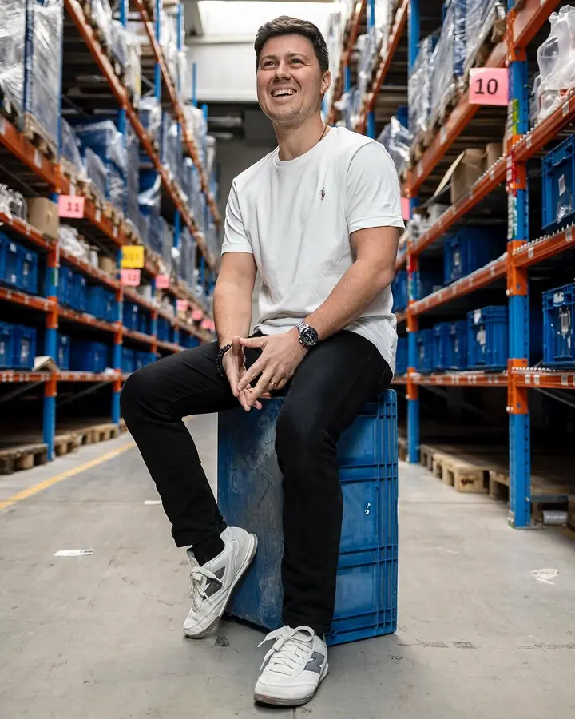
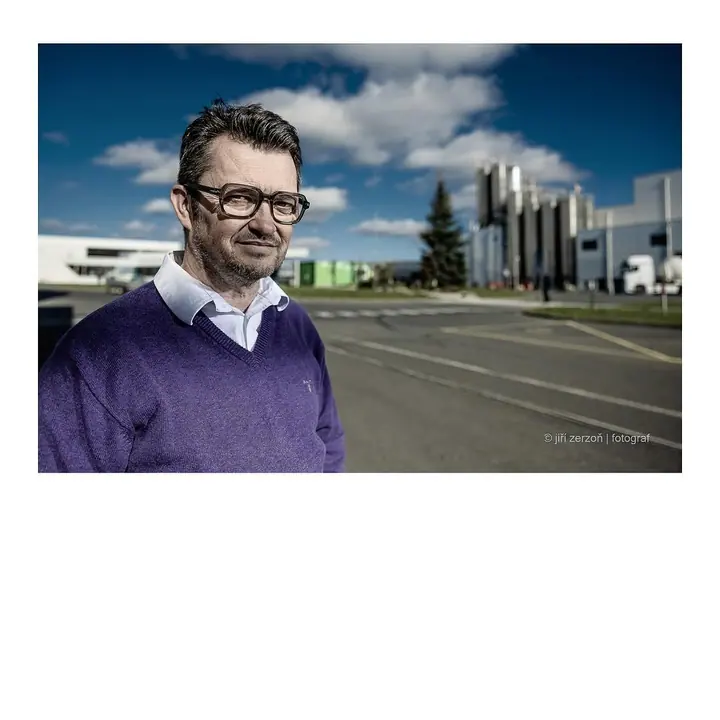
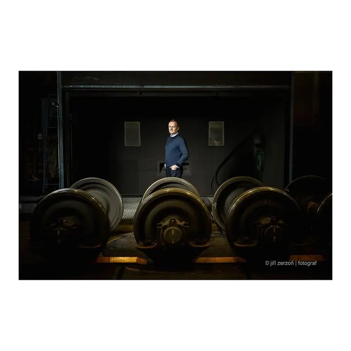
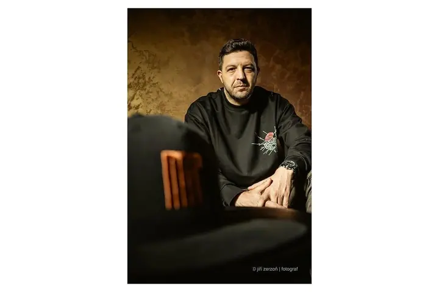
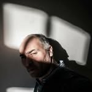

01 / 04
Portréty vedení firem
Fotím portréty vrcholového vedení pro výroční zprávy a profily firem. Fotit můžeme přímo ve vaší firmě, v provozu nebo v mém ateliéru v Ostravě.
Zeptat se na termín→



Portréty lidí, kteří vedou firmy
Zeptat se na termín →(01) Ahoj
Jmenuji se Jiří Zerzoň a od roku 1998 fotím průmysl , reportáže a portréty lidí pro firmy, redakce a agentury po celé republice. Fotím v Ostravě, kde mám i ateliér, ale za zakázkou rád vyrazím kamkoli.
776lidí sleduje mou práci na Instagramu
300příspěvků s fotkami a příběhy
(02) Co fotím
01 / 04
Fotím portréty vrcholového vedení pro výroční zprávy a profily firem. Fotit můžeme přímo ve vaší firmě, v provozu nebo v mém ateliéru v Ostravě.
Zeptat se na termín→02 / 04
Fotím v průmyslových provozech: výrobu, stroje i lidi u práce. Snímky se hodí do firemních časopisů, na web i do prezentací.
Zeptat se na termín→03 / 04
Fotím reportáže po celé ČR, třeba z návštěv obchodních partnerů a důležitých hostů nebo z kulturních akcí. Pro redakce posílám fotografie rovnou z místa konání.
Zeptat se na termín→Dále nabízím
Dlouhodobě fotím portréty pro časopisy a deníky. Hledám světlo a prostředí, které o člověku něco řekne.
↗(04) Postup
Od první zprávy po hotovou galerii.
Krok 1 z 4
Napíšete mi, co potřebujete: portrét vedení, reportáž nebo focení v provozu. Domluvíme termín, místo a pevnou cenu.
Krok 2 z 4
Probereme, k čemu fotografie budou, třeba do výroční zprávy, do časopisu nebo na web. Podle toho zvolím místo, světlo a styl.
Krok 3 z 4
Přijedu za vámi kamkoli v ČR, nebo se potkáme v mém ateliéru v Ostravě. Fotím rychle a bez zbytečného zdržování provozu.
Krok 4 z 4
Vyberu nejlepší snímky, zretušuji je a předám. Fotografie si archivuji, takže k nim máte přístup i později.
Fotím tam, kde se opravdu pracuje
(05) Za objektivem
Fotografii se věnuji od roku 1988. V roce 1998 jsem dostudoval LK v Ostravě a začal externě fotit pro Blesk a Deník Svoboda. Od roku 2000 jsem fotograf na volné noze a spolupracuji s týdeníky, měsíčníky, firemními časopisy, reklamními a PR agenturami po celém Česku.
Dlouhodobě fotím pro Moravskoslezský deník, MF Dnes, Hospodářské noviny, Forbes, Českou televizi, Divadlo Petra Bezruče nebo Statutární město Ostrava. Všechny fotografie v mém portfoliu vznikly pro konkrétní klienty, nefotím je jen kvůli vlastní propagaci.
Zakládám si na individuálním a vstřícném přístupu a pevných cenách. Fotografie vám zretušuji a uložím do archivu. S kolegy, kteří mají ve svých oborech dlouholeté zkušenosti, vám zajistím i grafické návrhy, sazbu, tisk nebo napsání PR článků. Od roku 2014 jsem členem Asociace profesionálních fotografů ČR.

Jiří
Jiří Zerzoň · Průmyslový, reportážní a portrétní fotograf
Ano, reportáže i firemní focení dělám po celé České republice. Pro redakce umím fotografie posílat přímo z místa konání.
Ve vaší kanceláři, ve výrobě nebo venku, podle toho, co má portrét vyprávět. K dispozici mám také ateliér na Špálově 14 v Ostravě.
Ano, focení v průmyslových provozech patří k tomu, co dělám nejdéle. Stačí se předem domluvit na bezpečnostních pravidlech a přístupu.
S kolegy z oboru vám zpracuji celou zakázku, od grafického návrhu přes sazbu a tisk až po napsání PR článků.
(07) Kontakt
Napište pár vět o tom, co si představujete, a termín, který se vám hodí.
foto@zerzon.cz